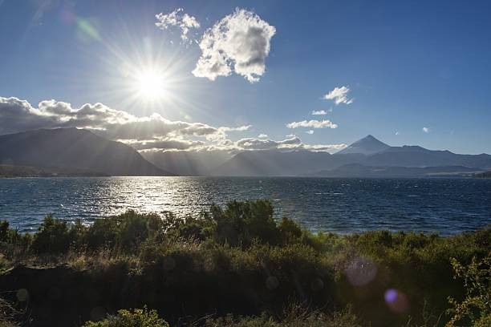
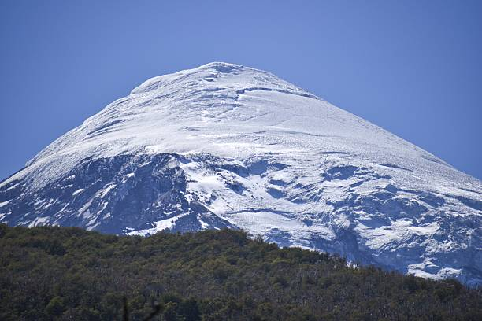
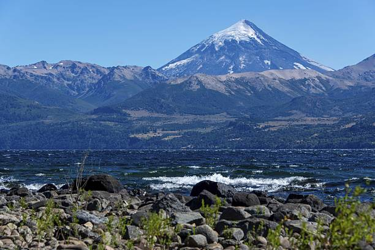
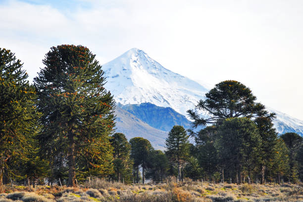

El parque alberga una diversidad natural excepcional. Sus bosques milenarios están dominados por la araucaria o pehuén, árbol emblemático de Neuquén que puede vivir más de 1.000 años. Estos bosques se mezclan con lagos de un azul intenso como el Huechulafquen y el Lácar, cuyas aguas deben su color a sedimentos glaciares. La zona norte del parque concentra los bosques de araucarias más imponentes, mientras que la zona sur presenta lagos más accesibles cerca de San Martín de los Andes, creando paisajes que cambian mágicamente con cada estación.



